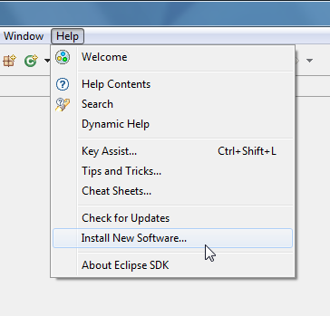
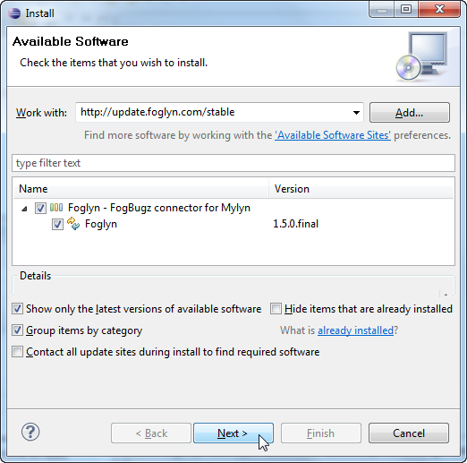
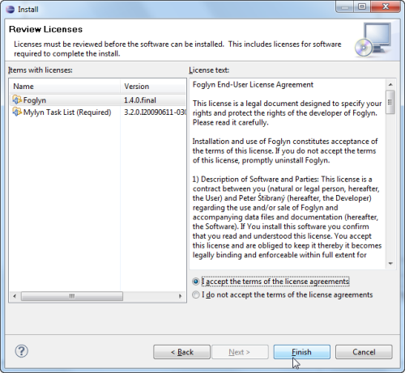
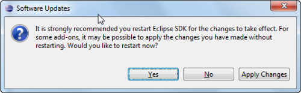

Instructions for installing Foglyn into Eclipse 3.5
Installation process in Eclipse Galileo has been simplified. From Help menu, choose Install New Software....
Type address of Foglyn Update Site into "Work with:" field, and press Enter:
http://update.foglyn.com/stable
After pressing Enter, Eclipse shows list of software available from given update site. Check Foglyn, and press Next button. You can also uncheck "Contact all update sites during install to find required software", if you already have Mylyn installed. This makes installation faster.
Next screen shows list of software that will be installed. After pressing Next button, you are presented with Foglyn license. Please read this license carefully before you continue. You have to choose I accept the terms of the license agreement(s) option before you can finish with installation.
After installation is finished, Eclipse needs to be restarted.
After Eclipse starts again, you are ready to take first steps in using Foglyn!